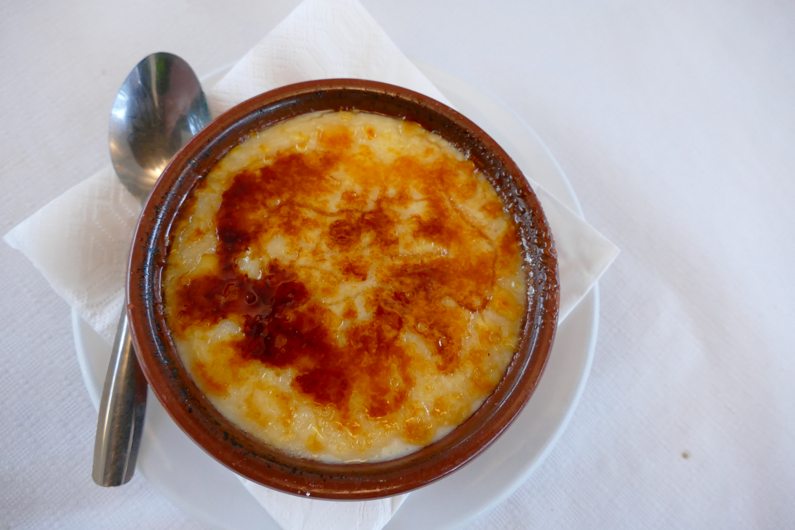

Crema catalana

Història
La crema catalana és una de les postres més tradicionals de la cuina catalana. S'elabora amb llet, rovells d'ou, sucre i midó, i s'aromatitza habitualment amb canyella i pell de llimona. La seva característica més coneguda és la capa de sucre caramel·litzat que es crema just abans de servir-la.
Ingredients
Per a quatre persones calen un litre de llet, sis rovells d'ou, 200 g de sucre, 40 g de midó de blat de moro, una branca de canyella i la pell d'una llimona. També cal una mica més de sucre per caramel·litzar la superfície.
Elaboració
S'escalfa la llet amb la branca de canyella i la pell de llimona, sense que arribi a bullir. En un recipient a part, es barregen els rovells amb el sucre i el midó. S'hi incorpora a poc a poc la llet colada i es torna a posar la barreja al foc, remenant constantment fins que espesseixi. Es reparteix en cassoletes, es deixa refredar i es guarda a la nevera. Just abans de servir, s'hi escampa sucre per sobre i es crema fins a obtenir una capa fina i cruixent.